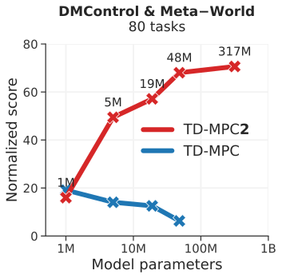
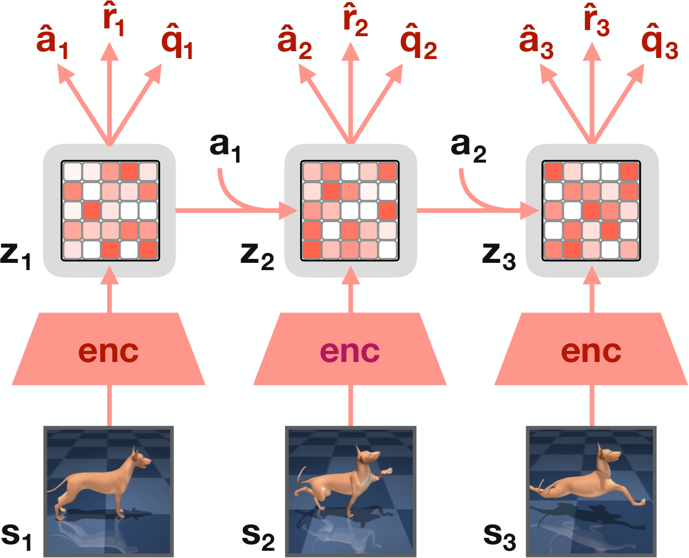
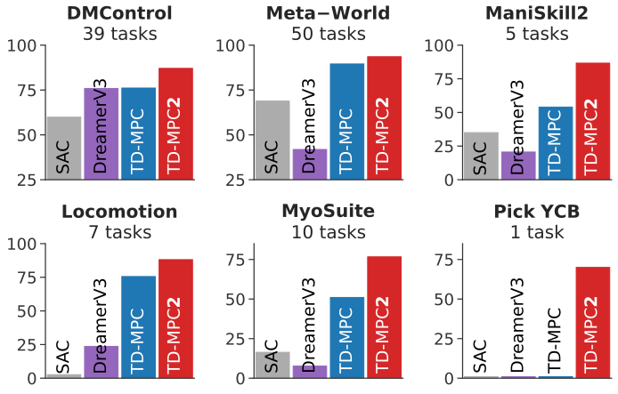
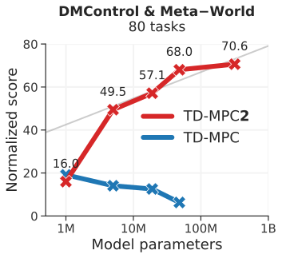

TD-MPC2: Scalable, Robust World Models for Continuous Control
原论文摘要 · English Abstract
TD-MPC is a model-based reinforcement learning (RL) algorithm that performs local trajectory optimization in the latent space of a learned implicit (decoder-free) world model. In this work, we present TD-MPC2: a series of improvements upon the TD-MPC algorithm. We demonstrate that TD-MPC2 improves significantly over baselines across 104 online RL tasks spanning 4 diverse task domains, achieving consistently strong results with a single set of hyperparameters. We further show that agent capabilities increase with model and data size, and successfully train a single 317M parameter agent to perform 80 tasks across multiple task domains, embodiments, and action spaces. We conclude with an account of lessons, opportunities, and risks associated with large TD-MPC2 agents. Explore videos, models, data, code, and more at https://tdmpc2.com
编码器把观测压成隐状态
观测 $\mathbf{s}$ 经编码器 $h$ 得到隐状态 $\mathbf{z}$，SimNorm 把每块投影到单纯形上
隐动力学只预测奖励与价值
动力学 $d$ 预测下一隐状态，奖励 $R$ 与终端价值 $Q$，全程不解码观测
离散回归与 Q 集成稳定训练
奖励与价值先对数变换再分桶、用交叉熵优化；5 个 $Q$ 集成取两个目标网络最小值
MPPI 在隐空间里规划
采样候选动作序列、模型推演打分、加权更新分布，末端用 $Q$ 自举长期回报
执行首动作、经验回写再训模型
每步只执行第一个动作再重新规划；回放数据联合训练模型与策略先验

问题与动机：为什么连续控制需要可扩展的世界模型
语言与视觉大模型已经证明，靠海量数据加可扩展架构可以长出通用模型；具身智能想复制这条路，却卡在两个地方。行为克隆路线假定有近专家示范，可用的数据量被严重限制；强化学习路线大多是单任务设计、逐任务调超参，而且没有可靠的调参方法，换一个任务、换一种奖励尺度就可能崩。TD-MPC 本是连续控制上很强的模型方法，但论文开篇就点出一个反直觉的现象：直接把它放大，性能反而下降——这在强化学习文献里是常见现象。 更深的矛盾是“通用”二字对算法的要求：一个要吃多任务、多本体、多动作空间混合数据的算法，必须对任务间的差异免疫，包括动作维度、探索难度与奖励量纲。TD-MPC2 的目标就定在这里：用同一套超参数，在 104 个任务、4 个任务域上都取得好成绩，并且能把单个世界模型放大到 317M 参数、同时学会 80 个任务。 这篇的定位不是提出全新范式，而是“把 TD-MPC 改造成可扩展版本”的攻坚：两方面贡献，一是重访核心设计选择换取鲁棒性，二是设计能容纳多本体、多动作空间的架构，且不依赖领域知识。理解这篇的关键，是把每个改动对应到它要消除的具体失效模式上。
- 104 个在线强化学习任务、4 个任务域、同一套超参数
- 单个 317M 参数智能体学会 80 个任务，数据来自 545M 条转移
- 300+ 模型检查点、数据集与代码全部开源
核心思想：隐式世界模型 + 规划 + TD 自举
TD-MPC2 的世界模型是“隐式”的：它不重建观测。生成式世界模型要逐像素或逐特征预测未来观测，信号丰富但难、且对控制未必有用；TD-MPC2 只学一个“对控制最有用”的模型：把观测 $\mathbf{s}$ 编码成隐状态 $\mathbf{z}$，然后只预测三件事——隐状态如何随动作演化、每步奖励是多少、从此往后还能拿到多少回报。模型从不解码回观测，省下的容量全部服务于决策。 决策方式是“短视野规划 + 长期价值自举”的结合。纯模型预测控制只在有限时域 $H$ 内优化动作序列，得到的只是局部最优；纯 TD 学习只靠价值函数，又容易被价值估计误差带偏。TD-MPC2 用 MPPI 在隐空间里采样并评估候选动作序列，序列末端用学到的终端价值函数 $Q$ 补上 $H$ 步之后的回报，目标可写成：
$$\pi(\mathbf{s}_t)=\arg\max_{\mathbf{a}_{t:t+H}}\mathbb{E}\left[\sum_{h=0}^{H-1}\gamma^h R(\mathbf{s}_{t+h},\mathbf{a}_{t+h})+\gamma^H Q(\mathbf{z}_{t+H},\mathbf{a}_{t+H})\right]$$
这里 $\mathbf{s}_t$ 是当前状态，$\mathbf{a}_{t:t+H}$ 是候选动作序列，$\gamma$ 是折扣因子，$R$ 是奖励函数，$\mathbf{z}_{t+H}$ 是模型推演 $H$ 步后的隐状态，$Q$ 是终端价值函数；其中 $\gamma^H Q(\mathbf{z}_{t+H},\mathbf{a}_{t+H})$ 这一项就是把规划视野之外的长期回报“自举”进来，这正是 TD-MPC 名字中 TD 的含义。 训练信号同样是三合一：联合嵌入预测让模型学会“动作导致隐状态如何变化”，奖励预测让模型对齐任务目标，TD 学习让价值函数学会长期回报；三者共享编码器与动力学，互相约束。策略先验 $p$ 再从中蒸馏出“什么动作大概率好”，反过来给规划器做采样向导。整套设计的目标是：模型只学决策需要的东西，所以同样的参数量能覆盖更多任务、更大数据。
- 不解码观测，只预测隐状态转移、奖励与价值
- 规划负责 $H$ 步内的精细控制，$Q$ 负责 $H$ 步外的长期回报
- 编码器、动力学、奖励、价值、策略先验五件套联合训练
模型结构与关键机制：五个组件与四处关键改造
架构如图 3，五个组件全部以观测 $\mathbf{s}$、动作 $\mathbf{a}$ 与可学习任务嵌入 $\mathbf{e}$ 为条件：编码器 $\mathbf{z}=h(\mathbf{s},\mathbf{e})$，隐动力学 $\mathbf{z}'=d(\mathbf{z},\mathbf{a},\mathbf{e})$，奖励 $\hat{r}=R(\mathbf{z},\mathbf{a},\mathbf{e})$，终端价值 $\hat{q}=Q(\mathbf{z},\mathbf{a},\mathbf{e})$，策略先验 $\hat{\mathbf{a}}=p(\mathbf{z},\mathbf{e})$。其中 $h$ 把观测映射为隐表示 $\mathbf{z}$；$d$ 预测下一步隐状态 $\mathbf{z}'$；$R$ 预测一步奖励 $\hat{r}$；$Q$ 预测从该状态动作出发的折扣回报 $\hat{q}$；$p$ 预测能让 $Q$ 最大的动作 $\hat{\mathbf{a}}$。多任务时 $\mathbf{e}$ 让同一套网络区分不同任务；单任务时可以略去 $\mathbf{e}$。 第一处关键改造是 SimNorm：把 $\mathbf{z}$ 切成 $L$ 个 $V$ 维小块，每块做 softmax，投影到单纯形上：
$$\mathbf{g}_i=\frac{e^{\mathbf{z}_{i:i+V}/\tau}}{\sum_{j=1}^{V}e^{\mathbf{z}_{i:i+V}/\tau}}$$
这里 $\mathbf{g}_i$ 是第 $i$ 个单纯形，$V$ 是每个单纯形的维度（实现中默认取 $8$），$\tau>0$ 是控制稀疏程度的温度，$L$ 个 $\mathbf{g}_i$ 拼起来就是归一化后的隐表示 $\mathbf{z}^{\circ}$。直觉是：softmax 让每个小块的表征近似稀疏、且 $\ell_2$ 范数有界，梯度不再爆炸；它是 VQ-VAE 离散码本的“软”版本——不强制离散，却保留了向稀疏偏置的好处。论文的消融表明，没有 SimNorm，原版 TD-MPC 在 Walker Stand 与 Walker Walk 等任务上会因梯度爆炸而发散，而 TD-MPC2 保持稳定。 第二处改造是奖励与价值改用离散回归：把奖励和 TD 目标先做对数变换，再分桶当作多分类问题，用交叉熵 $\mathrm{CE}$ 优化。这样损失大小不再随任务奖励的量纲漂移，是“同一套超参数跑 104 个任务”得以成立的前提。注意联合嵌入预测仍保留连续的 $\ell_2$ 回归，因为 $\mathbf{z}$ 已被 SimNorm 归一化，而对高维 $\mathbf{z}$ 做离散回归需要每维都分桶，代价太大。 第三、四处改造都在价值估计上：学 5 个 $Q$ 函数的集成，每个 $Q$ 的第一层线性层后加 1% Dropout，TD 目标取随机抽出的两个目标网络 $\bar{Q}$ 的最小值；目标网络本身是 $Q$ 的指数移动平均（EMA）。取最小值抑制价值高估，集成与 Dropout 抑制过拟合与目标方差。配套的还有架构细节：全部组件用带 LayerNorm 与 Mish 激活的 MLP，策略先验改用最大熵随机策略（熵系数 $\alpha$ 用滑动统计自适应），多任务时把观测与动作零填充到最大维度、并对无效动作维做掩码——只在有效维度上算熵、只在有效维度上采样。
- 五组件：$h$、$d$、$R$、$Q$、$p$，全部以任务嵌入 $\mathbf{e}$ 为条件
- SimNorm：softmax 单纯形投影，治梯度爆炸
- 奖励与价值用对数变换后的离散回归（交叉熵），与奖励量纲脱钩
- 5 个 $Q$ 函数集成 + 取两个目标网络最小值 + 1% Dropout
- 任务嵌入 $\mathbf{e}$ 为 96 维、$\ell_2$ 范数不超过 $1$；零填充 + 动作掩码兼容多动作空间

训练与推理流程：从回放中学习，用 MPPI 做决策
在线训练是“学模型—用模型采数据”的循环：智能体维护回放缓冲 $\mathcal{B}$，每步从中均匀采样长度为 $H$ 的轨迹段，联合优化模型目标：
$$\mathcal{L}(\theta)=\mathbb{E}\left[\sum_{t=0}^{H}\lambda^t\left(\|\mathbf{z}_t'-\mathrm{sg}(h(\mathbf{s}_t'))\|_2^2+\mathrm{CE}(\hat{r}_t,r_t)+\mathrm{CE}(\hat{q}_t,q_t)\right)\right]$$
这里 $\theta$ 是全部模型参数，$(\mathbf{s},\mathbf{a},r,\mathbf{s}')_{0:H}$ 是采到的轨迹段，$\lambda\in(0,1]$ 给越远的时间步越小的权重，$\mathrm{sg}$ 是 stop-grad（目标隐状态不回传梯度，避免表征坍缩），$q_t=r_t+\gamma\bar{Q}(\mathbf{z}_t',p(\mathbf{z}_t'))$ 是 TD 目标，$\bar{Q}$ 是 $Q$ 的指数移动平均。策略先验 $p$ 另用最大熵目标训练：
$$\mathcal{L}_p(\theta)=\mathbb{E}\left[\sum_{t=0}^{H}\lambda^t\left[\alpha Q(\mathbf{z}_t,p(\mathbf{z}_t))-\beta\mathcal{H}(p(\cdot\mid\mathbf{z}_t))\right]\right]$$
其中 $\mathcal{H}$ 是策略的熵，$\alpha$ 权衡价值最大化、$\beta$ 权衡熵；梯度只传给 $p$，不干扰世界模型。训练时批量为 256、更新数据比（UTD）为 1——比 DreamerV3 的 512 低得多，这是效率上的重要优势；同时论文去掉了优先采样与 MPPI 的动量项，以换取更简单的实现。 推理时每步都重新规划：用 MPPI 在隐空间里迭代优化动作分布的参数 $\mu^*,\sigma^*$：
$$\mu^*,\sigma^*=\arg\max_{(\mu,\sigma)}\mathbb{E}_{(\mathbf{a}_t,\dots,\mathbf{a}_{t+H})\sim\mathcal{N}(\mu,\sigma^2)}\left[\gamma^H Q(\mathbf{z}_{t+H},\mathbf{a}_{t+H})+\sum_{h=t}^{H-1}\gamma^h R(\mathbf{z}_h,\mathbf{a}_h)\right]$$
其中 $\mu,\sigma\in\mathbb{R}^{H\times m}$ 是 $H$ 步动作序列分布的均值与标准差，$\mathcal{N}(\mu,\sigma^2)$ 是采样分布，期望内的两项分别是 $H$ 步内的折扣奖励与 $H$ 步后的自举价值。做法是反复采样动作序列、用模型推演并打分、按得分加权更新 $\mu,\sigma$；一部分样本直接来自策略先验 $p$ 以加速收敛，分布初始化用上一步的解平移一位（warm-start）。规划固定迭代若干轮后，只执行第一个动作 $\mathbf{a}_t$，下一时刻重新规划——典型的闭环模型预测控制。 多任务训练时，同一套流程不变，只改数据与批量：80 任务模型用 545M 条转移训练（来自 240 个单任务 TD-MPC2 智能体的回放，行为质量从随机到专家全覆盖），批量放大到 1024，除此之外超参数一字不改。微调到新任务时，把新任务的嵌入 $\mathbf{e}$ 初始化为语义相近的已学任务的嵌入，再用在线强化学习全量微调——10 个留出任务、每任务 2 万步环境交互，就能达到从头训练约 2 倍的分数。
- 均匀采样回放（去掉优先采样），UTD 为 $1$、批量 $256$
- MPPI 规划：采样—推演—加权更新，warm-start + 策略先验引导
- 多任务只放大批量到 $1024$，超参数不变；微调时复用相似任务的嵌入 $\mathbf{e}$
实验与结果：104 个任务与 317M 参数的扩展曲线
单任务在线强化学习的主实验覆盖 104 个任务：DMControl 39 个、Meta-World 50 个、ManiSkill2 5 个、MyoSuite 10 个，动作维度最高到 39 维，包含图像观测、稀疏奖励、多物体操作与肌肉骨骼控制。基线是 SAC（无模型）、DreamerV3（生成式世界模型，约 20M 参数）与原版 TD-MPC。结果是 TD-MPC2 在全部四个任务域上都占优，且用的是同一套超参数——而 SAC 与 TD-MPC 都用了逐任务超参。最能拉开差距的是难任务：Humanoid 与 Dog 这类高维运动任务上，SAC 与 DreamerV3 会出现数值不稳定、数据效率明显更低；ManiSkill2 的 Pick YCB（74 个 YCB 物体）上 TD-MPC2 成功率超过 60%，其他方法在给定预算内基本学不会。 多任务扩展是这篇的招牌结果：同一 80 任务数据集（50 个 Meta-World + 30 个 DMControl）上，模型从 1M 放到 317M 参数，归一化分数从 16.0 单调涨到 70.6（5M 为 49.5、19M 为 57.1、48M 为 68.0），且在 317M 处仍未见饱和，分数近似随参数量的对数线性增长。代价是训练成本：317M 模型在单张 RTX 3090 上约需 33 GPU 天，48M 约 12 天。任务嵌入的 t-SNE 还显示，语义相近的任务（如开门与关门）在嵌入空间里确实靠近——不过靠近的依据更多是动力学（本体、物体）而非目标（走、跑），这与“动力学决定控制难度”的直觉一致。 两组辅助实验补齐了画像：少样本微调上，70 任务预训练的 19M 模型在 10 个新任务、每任务 2 万步时比从头训练好约 2 倍；视觉强化学习上，把编码器换成浅层 4 层卷积、图像 64×64，不改任何超参数，TD-MPC2 在 10 个图像版 DMControl 任务上与 DrQ-v2、DreamerV3 相当。消融（图 9，Dog Run、Humanoid Walk、Pick YCB 三个最难任务加 80 任务多任务）显示每一处改造都有贡献，且相对重要性在单任务与多任务下一致；其中 SimNorm 与离散回归是最关键的两项。
- 104 任务全胜基线，同一套超参数；SAC 与 TD-MPC 需逐任务调参
- Pick YCB 成功率超 60%，其余方法在预算内基本学不会
- 80 任务归一化分数随规模单调上升：1M 为 16.0，317M 为 70.6
- 少样本微调 2 万步即达从头训练约 2 倍；视觉任务不改超参即与最强基线相当
实验结果 · 数据
以下数字均取自论文表 1（80 任务多任务归一化分数与训练成本）与附录 J 表 10（测试时正则化），未做估算。
80 任务多任务归一化分数随模型规模变化
| 项目 | 数值 |
|---|---|
| 317M | 70.6 归一化分数 |
测试时正则化强度对 80 任务分数的影响（19M 模型）
| 项目 | 数值 |
|---|---|
| c=0.1 | 44.13 归一化分数 |
扩展曲线的核心信息是单调性而非斜率：1M 到 5M 分数从 16.0 跃升到 49.5，说明小模型根本装不下 80 个任务；5M 到 48M 再涨 18.5 分；而 48M 到 317M 只涨 2.6 分、代价是从 12 天涨到 33 天 GPU 时间，边际收益明显收窄。论文称分数近似随参数量对数线性增长，但没有拟合扩展律，317M 处“未饱和”的判断也只是目测——真正的问题不是能不能继续涨，而是值不值得继续涨。
测试时正则化呈现典型的倒 U 形：19M 模型在 80 任务上，无正则化 56.54 分，$c=0.001$ 时 58.14 分，$c=0.01$ 时达到 62.01 分，而 $c=0.1$ 时跌到 44.13 分。这说明用 $Q$ 集成的不确定性惩罚规划中的高风险轨迹确实能提升离线多任务模型的表现，但惩罚过强会把有价值的探索也一并压掉；由于正则化只在测试时作用于规划、不改模型参数，它是把离线强化学习的保守性从训练时挪到推理时的一次成功尝试，但系数 $c$ 仍需按任务族调，尚未做到完全任务无关。
也要看到数字的水分：归一化分数是把 Meta-World 成功率与 DMControl 回报都压到 0–100 再平均，单任务短板会被平均掉；104 任务的主结果以曲线形式报告、未给出逐任务数值表，无法从正文核对每个任务的提升幅度；少样本微调的“2 倍”只在 10 个留出任务、2 万步的低数据区成立，且效果任务依赖。总体上，扩展曲线的方向可信、幅度需结合成本与平均方式来理解。


局限与争议：这篇没解决什么
最大的边界是动作空间：TD-MPC2 完全是为连续控制设计的，MPPI 本质上是连续动作的采样优化，论文自己承认扩展到离散动作仍是开放问题——而这恰恰是 DreamerV3 最强的地方（Atari、Minecraft）。所以“通用智能体”的拼图里，TD-MPC2 与 DreamerV3 是互补的两块，不是替代关系。 扩展曲线的解读要留有余地：分数在 48M 到 317M 之间只涨了 2.6 分（68.0 到 70.6），边际收益已明显收窄，而训练成本从 12 天涨到 33 天；论文没有拟合扩展律，所谓“随对数线性增长”只是目测拟合。归一化分数本身是把 Meta-World 成功率与 DMControl 回报都压到 0–100 再平均，单个任务的短板会被平均掉；个别任务上 TD-MPC2 并非最优，例如 MyoSuite 的 Key Turn Hard 上原版 TD-MPC 早期训练反而更好。 多任务数据的来源也值得追问：545M 条转移来自 240 个单任务 TD-MPC2 智能体的回放，本质上是“自产”的、覆盖从随机到专家行为的数据，而不是人类示范或真实机器人数据；能否从真正非精选、跨本体的人类数据里学出同样的能力，论文没有验证。此外，少样本微调的效果依赖任务相似性（嵌入初始化为相近任务），对完全陌生的任务能迁移多少仍是开放问题；奖励误设导致非预期行为、把无约束自主权交给学习模型等风险，论文在第 5 节有坦诚讨论，但没有给出解法。
- 离散动作空间仍是开放问题，MPPI 不直接适用
- 48M 到 317M 分数仅涨 2.6 分，边际收益收窄、成本陡增
- 归一化分数是平均值，会掩盖个别任务的短板
- 多任务数据来自单任务智能体的回放，而非人类或真实机器人数据
为什么今天还重要
TD-MPC2 的意义不在某个单项冠军，而在于它证明了“规划派”世界模型也可以走规模化路线：此前能拿出干净扩展曲线的多是生成式路线（DreamerV3）或行为克隆路线（Gato、RT-1），而 TD-MPC2 说明，不重建观测的隐式模型反而更适合吃大规模混合质量数据——因为模型容量不必浪费在像素级重建上。这一判断直接影响后来通用具身模型的设计取舍：要不要解码器，取决于你想让模型“看懂世界”还是“用好世界”。 它的工程遗产同样实在：同一套超参数跑 104 个任务的标准、SimNorm 这种即插即用的稳定化技巧、离散回归处理多任务奖励量纲的方法，都成了后续连续控制工作的默认配置；300+ 开源检查点与数据集也让后来者可以直接站在 317M 多任务模型上做微调与分析，而不是从零复现。 往前看，论文自己指出的三条路至今仍是主线：把隐式世界模型与视觉语言模型结合做高层认知、把少样本微调做成真正的跨本体迁移、以及把测试时正则化（附录 J 的不确定性惩罚，$c=0.01$ 时 80 任务分数从 56.54 提到 62.01）发展成可靠的离线强化学习手段。读这篇时最值得带走的问题是：在你的任务上，世界模型到底该“预测什么”——答案决定了模型该长什么样。
- 证明了“规划派”隐式世界模型同样可以规模化
- SimNorm、离散回归、单超参数范式成了后续工作的默认配置
- 300+ 开源检查点让多任务世界模型可直接复用与微调
关键术语
- 隐式世界模型
- 不解码重建观测、只在隐空间预测转移、奖励与价值的控制导向型世界模型。
- SimNorm
- 把隐表示切块做 softmax 投影到单纯形上的归一化方法，偏置表征走向稀疏并防止梯度爆炸。
- MPPI
- 模型预测路径积分，一种在隐空间采样动作序列、按回报加权迭代优化动作分布的无导数规划算法。
- 任务嵌入
- 可学习的定长向量 $\mathbf{e}$，让同一套世界模型区分不同任务，其几何结构反映任务动力学的相似性。
- 离散回归
- 把奖励与价值经对数变换后分桶、按多分类交叉熵优化的回归方式，使损失与奖励量纲脱钩。
- Q 函数集成
- 同时训练多个 $Q$ 函数、取随机抽出的两个目标网络最小值做 TD 目标，以抑制价值高估与目标方差。
思考题
思考题 1：TD-MPC2 放弃观测重建、只预测奖励与价值，换来了什么，又失去了什么？在哪些任务上这种取舍可能反噬？
查看参考答案
换来的是容量与数据效率：不学像素级重建，模型容量全部服务于决策，同一套参数能覆盖 104 个任务与 545M 条混合质量转移，且在 Pick YCB 这类精细操作任务上成功率超过 60%、而生成式基线在预算内基本学不会；失去的是观测级监督信号与可解释性——模型无法“想象”出未来画面，也就难以做需要视觉细节预判的任务，且价值与奖励预测一旦出错没有重建误差可以交叉验证。反噬最可能出现在奖励稀疏、观测细节决定成败的任务上，例如需要精确视觉对齐的操作或长期开环预测；论文的视觉实验只做到 64×64、10 个任务且仅与基线相当，说明隐式路线在视觉丰富度上仍未证明优势。
思考题 2：为什么原版 TD-MPC 直接放大模型会变差，而 TD-MPC2 放大到 317M 参数仍能单调变好？SimNorm、离散回归与 $Q$ 集成各自堵住了哪种失效模式？
查看参考答案
判断是三处改造各堵一种失效：SimNorm 堵梯度爆炸——原版 TD-MPC 的隐状态无约束，在 Walker Stand 与 Walker Walk 等任务上梯度爆炸发散，SimNorm 用 softmax 单纯形投影给 $\mathbf{z}$ 加上有界、近稀疏的结构，训练才稳定；离散回归堵奖励量纲失配——连续回归的损失随奖励量级漂移，多任务下无法用同一套超参，对数变换后分桶做交叉熵使损失与量纲脱钩；$Q$ 集成堵价值高估与目标方差——5 个 $Q$ 函数加 1% Dropout、取两个随机目标网络的最小值，并用指数移动平均做目标网络，使 TD 目标在放大后仍可信。消融图 9 显示三者缺一不可，且重要性在单任务与 80 任务多任务下一致；反过来也说明“放大变差”不是规模本身的问题，而是训练动力学先崩了。
思考题 3：单个 317M 参数智能体在 80 个任务上拿到 70.6 的归一化分数，离“通用具身智能体”还差什么？
查看参考答案
还差四块：动作空间上，MPPI 只适用于连续动作，离散动作（如 Atari、Minecraft）仍是开放问题，而 DreamerV3 已证明生成式路线能覆盖离散域；新任务泛化上，少样本微调依赖“初始化为相似任务的嵌入”，对完全陌生任务的迁移效果任务依赖、且只在 10 个留出任务、2 万步上验证过，零样本做新任务仍未实现；数据上，545M 条转移来自单任务智能体的回放而非人类或真实机器人数据，跨本体、跨真实世界的数据规模仍差几个数量级；评估上，70.6 是 0–100 归一化平均分、48M 到 317M 仅涨 2.6 分，边际收益已收窄，且奖励误设与无约束自主权的安全风险仍无解法。结论是：TD-MPC2 证明了连续控制方向的可扩展性，但“通用”仍需补上离散动作、真实数据与安全三块拼图。
谱系与位置
上一篇 DreamerV3（Hafner et al., 2023）走的是生成式路线：用 RSSM 世界模型重建观测、再从想象轨迹里训练演员—评论家策略，凭单套超参数与离散回归证明了世界模型可以规模化，并横跨离散与连续动作域。TD-MPC2 继承了 DreamerV3 的两个核心议程——单套超参数的鲁棒性与随模型规模扩展的能力，以及在对数变换空间做离散回归来驯服奖励量纲——但在方法论上分叉：它放弃观测重建，改用隐式世界模型加 MPPI 规划与终端价值自举，专攻连续控制；同时引入可学习任务嵌入与动作掩码，把“规模化”从单任务参数扩展推进到多任务、多本体、多动作空间的通用世界模型。两者同属 World Models—PlaNet—Dreamer 的世界模型主线，TD-MPC2 是其中“规划派”分支的规模化版本，与 DreamerV3 的“生成想象派”互补而非替代：DreamerV3 更通用（含离散动作），TD-MPC2 在困难连续控制上更强。